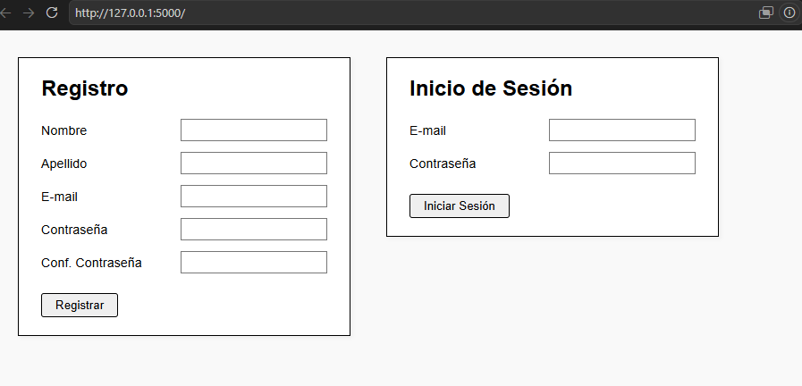
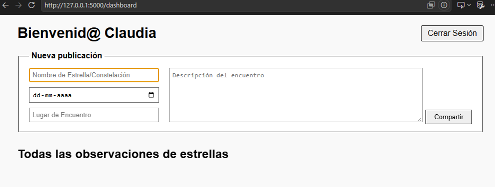
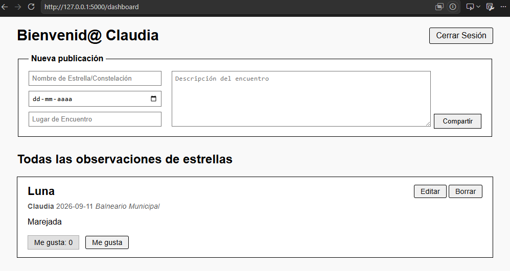
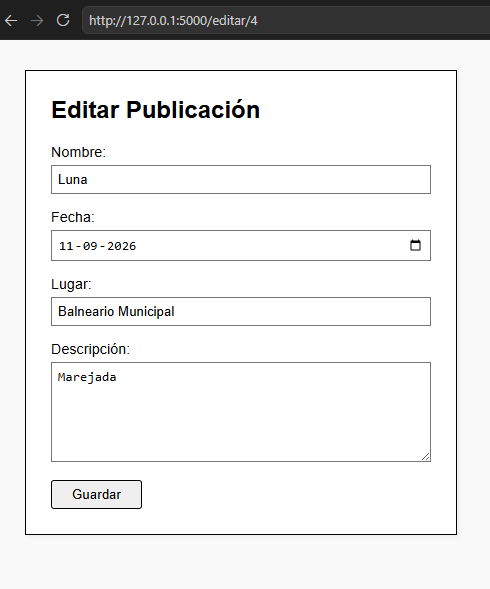
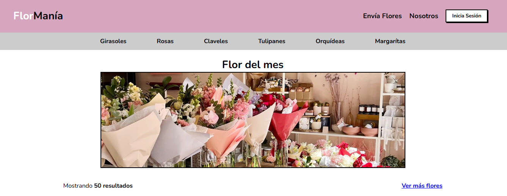
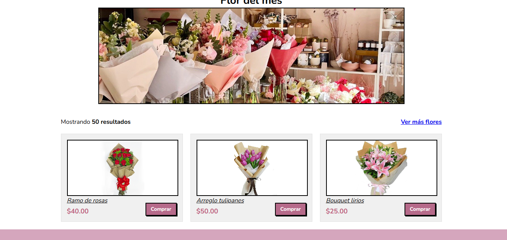
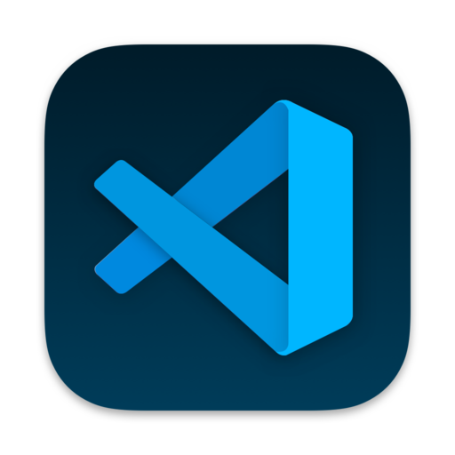

CLAUDIA OLMOS MIRANDA
Desarrolladora Full Stack Python y Profesional en Salud
Construyo aplicaciones web prácticas de principio a fin. Me apasiona programar, crear interfaces interactivas y estructurar bases de datos eficientes, usando herramientas como Python, Flask y Django para que todo funcione como debe.
Acerca de mí
Desarrolladora Full Stack enfocada en crear software funcional, eficiente y centrado en resolver problemas reales. Manejo el ciclo completo de desarrollo utilizando Python, Flask, Django y bases de datos relacionales, transformando requerimientos complejos en aplicaciones limpias y de alto rendimiento.
Proyectos Destacados
Foro de Observación de Estrellas y Constelaciones




Plataforma interactiva web para registrarse, compartir observaciones astronómicas, interactuar mediante likes y gestionar publicaciones de forma dinámica.
FlorManía - E-commerce de Flores


Sitio web de comercio electrónico enfocado en arreglos florales, categorización de productos y simulación fluida de compra en línea.
Herramientas y Tecnologías
 Python
Python
 Flask
Flask
 JavaScript
JavaScript
 HTML
HTML
 MySQL
MySQL

VS Code CSS
CSS
Estudios y Trayectoria
Desarrolladora Full Stack Python (Bootcamp 180+ Horas)
Skillnest / Coding Dojo Latam — Agosto 2026Formación intensiva en diseño y desarrollo de aplicaciones web completas, backend con Python/Flask/Django y bases de datos relacionales.
Diplomado en Gestión de Calidad y Acreditación en Salud
Universidad Autónoma de Chile — 2025Especialización en normativas de calidad, procesos asistenciales y mejora continua en organizaciones de salud.
Título de Enfermera / Licenciatura en Ciencias de la Salud
Universidad San Sebastián — 2017 – 2023Formación universitaria integral con sólidas bases clínicas, científicas y humanitarias.
Google Data Analytics Professional Certificate
Coursera / Talento Digital — En curso
Formación enfocada en limpieza, análisis y visualización de datos utilizando SQL, Tableau y R.
Google Cybersecurity Professional Certificate
Coursera / Talento Digital — En curso
Aprendizaje en fundamentos de seguridad de redes, gestión de riesgos, Linux y herramientas SIEM.